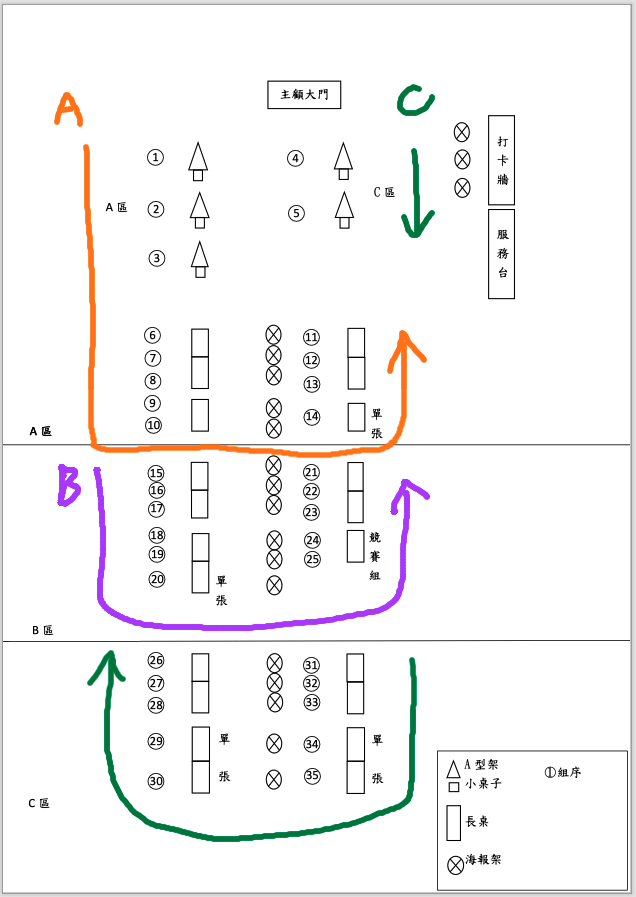
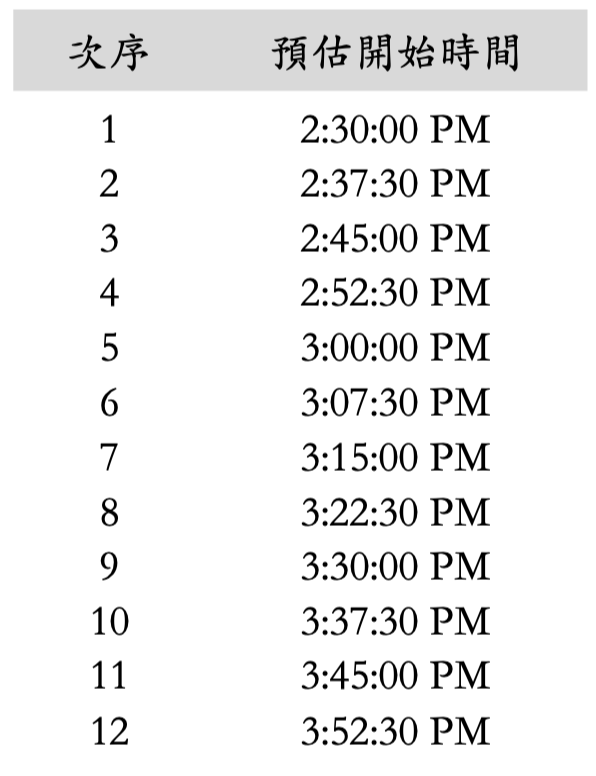
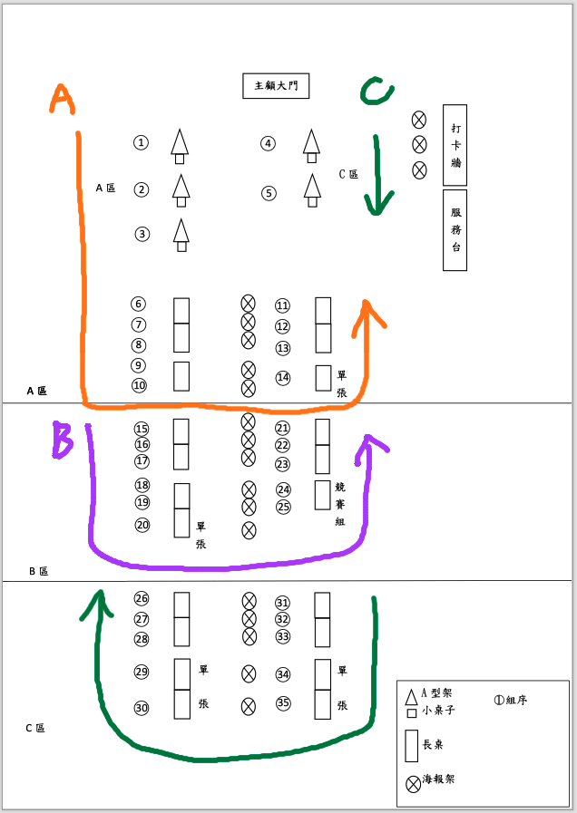
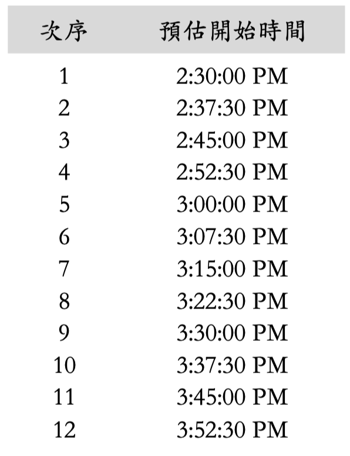
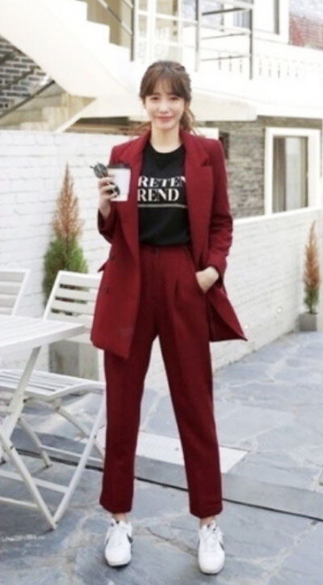
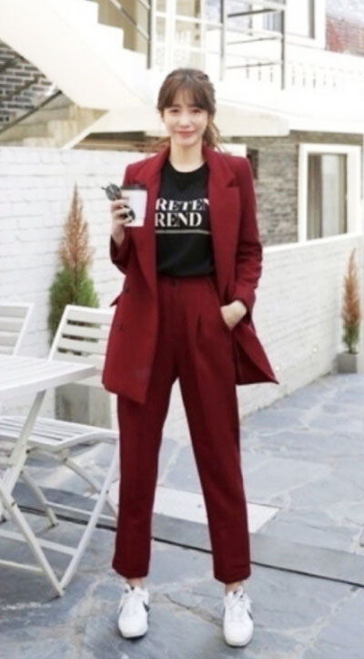

Q & A (學生版)
Q1.成果展活動時程如何安排，有什麼要特別留意的嗎？
2022/11/24就是畢業成果展了，
這是呈現同學專長的絕佳機會，請大家努力以赴喔！
提醒大家：
(1) 當天10：00-12：00是各組佈置時間，若需要更多時間佈置可以提早到。
(2) 當天每個小組的時間共7分30秒（這些時間用來做作品介紹、委員提問、小組回答等），各小組可以準備大約5分鐘左右的作品介紹內容。
(3) 當天16：10是畢業團拍時間，希望每位同學都能留下來拍照。
(4) 當天不會有延長線提供筆電、手機充電，如果需要使用筆電，請事先充飽電或是準備備用筆電。
成果展日期：2022/11/24，地點：主顧大廳，詳細活動時程如下：
這是呈現同學專長的絕佳機會，請大家努力以赴喔！
提醒大家：
(1) 當天10：00-12：00是各組佈置時間，若需要更多時間佈置可以提早到。
(2) 當天每個小組的時間共7分30秒（這些時間用來做作品介紹、委員提問、小組回答等），各小組可以準備大約5分鐘左右的作品介紹內容。
(3) 當天16：10是畢業團拍時間，希望每位同學都能留下來拍照。
(4) 當天不會有延長線提供筆電、手機充電，如果需要使用筆電，請事先充飽電或是準備備用筆電。
成果展日期：2022/11/24，地點：主顧大廳，詳細活動時程如下：

Q2.我們需要準備投影片做介紹嗎？
這一屆是採取桌邊評分方式，並未安排專題生做正式簡報，但仍需為評審老師介紹專題成果，若大家覺得用投影片比較好介紹，那當然也可以準備精美的投影片。
其他常見的方式有實物展示、預錄展示、文案展示、現場實作展示，並輔以口頭說明。實際的介紹方式請小組成員和指導老師做討論。
其他常見的方式有實物展示、預錄展示、文案展示、現場實作展示，並輔以口頭說明。實際的介紹方式請小組成員和指導老師做討論。
Q3.學生作品海報的印製有什麼規定？小組的海報色系需要符合今年的主視覺設計嗎？印刷費有補助嗎？
本屆每個小組的海報統一印製A1尺寸，
內容請包含下列資訊：
(1)「靜宜⼤學觀光事業學系 畢業專題」字樣。
(2)作品名稱。
(3)作者群名單。
(4)指導老師名單。
字型、字體大小則未做硬性規定。
小組的海報色系不一定要和今年的主視覺設計一模一樣，只要盡量符合你們的專題題目就好，例如今年有一組做澎湖旅遊的同學說他們想走藍色風，那樣就很搭啊。
印刷費因為經費不足，需由各小組自行支付。提醒大家：海報印製需要時間，請提早送印。
內容請包含下列資訊：
(1)「靜宜⼤學觀光事業學系 畢業專題」字樣。
(2)作品名稱。
(3)作者群名單。
(4)指導老師名單。
字型、字體大小則未做硬性規定。
小組的海報色系不一定要和今年的主視覺設計一模一樣，只要盡量符合你們的專題題目就好，例如今年有一組做澎湖旅遊的同學說他們想走藍色風，那樣就很搭啊。
印刷費因為經費不足，需由各小組自行支付。提醒大家：海報印製需要時間，請提早送印。
Q4.我在國外實習，無法返國怎麼辦？
成果展是「專題實作」課程的期末考，為了公平性的考量，海外同學請以視訊方式參與，不可缺席喔。
至於幾點幾分連線？使用什麼軟體？要不要切視訊看到面孔？請和指導老師及小組成員討論。
至於幾點幾分連線？使用什麼軟體？要不要切視訊看到面孔？請和指導老師及小組成員討論。
Q5.我被隔離了，成果展怎麼辦？
辛苦了，若仍可上線，請以視訊方式參與；若有確診且病情嚴重，請出具證明向指導老師請假。祝早日康復喔！
Q6.評審幾點會評到我們？
這次有三組評審老師，分為A、B、C組，三組同時進行。A、B組逆時針、C組順時針評分。
A組次序：1-2-3-6-7-8-9-10-14-13-12-11 (共評12組)。
B組次序：15-16-17-18-19-20-25-24-23-22-21 (共評11組)。
C組次序：4-5-31-32-33-34-35-30-29-28-27-26 (共評12組)。
評審次序如下圖。

然後因為是2:30開始評分，且每個小組的時間為7分30秒，所以可以計算出以下的預估時間表。
例如組號14的小組是A評審小組的次序9，所以大約下午3:30左右開始評分。
至於同學問說「我們小組的組號是幾號」？答案請見下一則問答喔。

A組次序：1-2-3-6-7-8-9-10-14-13-12-11 (共評12組)。
B組次序：15-16-17-18-19-20-25-24-23-22-21 (共評11組)。
C組次序：4-5-31-32-33-34-35-30-29-28-27-26 (共評12組)。
評審次序如下圖。

然後因為是2:30開始評分，且每個小組的時間為7分30秒，所以可以計算出以下的預估時間表。
例如組號14的小組是A評審小組的次序9，所以大約下午3:30左右開始評分。
至於同學問說「我們小組的組號是幾號」？答案請見下一則問答喔。

Q7.那我們小組的組號是幾號？
Q8.我11/24有別的課耶，怎麼辦？
策展小組已於10月份調查11/24當天有課的大四同學名單，並已在10/28統一由系辦公室送出公假申請了，因此不可以再說當天有課不能參加成果展囉。
不過若同學當時忘了回報自己有課、沒請到公假，那就要自己跟授課老師請假了，不過老師是否准假，一樣是由各授課老師決定。
不過若同學當時忘了回報自己有課、沒請到公假，那就要自己跟授課老師請假了，不過老師是否准假，一樣是由各授課老師決定。
Q9.當天要穿什麼衣服啊？可以穿布鞋嗎？
原則上穿正式服裝，也就是不要穿得太隨性，像是短褲、拖鞋就非常不適合。
能不能穿布鞋要看穿搭，有時候穿布鞋也很好看。

建議可以和指導老師及小組成員討論看看怎麼穿會更乾淨俐落，甚至更符合小組的專題題目、讓自己看起來更專業喔。
能不能穿布鞋要看穿搭，有時候穿布鞋也很好看。

建議可以和指導老師及小組成員討論看看怎麼穿會更乾淨俐落，甚至更符合小組的專題題目、讓自己看起來更專業喔。
Q10.畢業專題的期末成績怎麼計算？
期末成績計算方式：計劃書審查佔20%，指導老師評分佔50%，評審委員評分佔30%。
Q11.我同時也是現場工作人員，到時候評分輪到我們時怎麼辦？
各任務編組都有足夠的工作人員，到時候請互相支援。
小組組員也請分配好組內工作。
評分現場會比較忙碌的是接待組、攝影組、機動組，建議先預估自己小組幾點幾分會開始評分，並事先與組員討論好要如何相互支援。
小組組員也請分配好組內工作。
評分現場會比較忙碌的是接待組、攝影組、機動組，建議先預估自己小組幾點幾分會開始評分，並事先與組員討論好要如何相互支援。
Q12.成果展之後，我們還需要做什麼嗎？
後續若有需要同學協助什麼，會由各班策展代表做通知。目前已知是會請同學上網填寫期末問卷。
靜宜大學觀光事業學系 版權所有。
王錦裕老師 製作、整理。
王錦裕老師 製作、整理。
最後更新日期：2022/11/19
更新歷程：
2022/11/19學生版QA平台上線
2022/11/19學生版QA平台上線